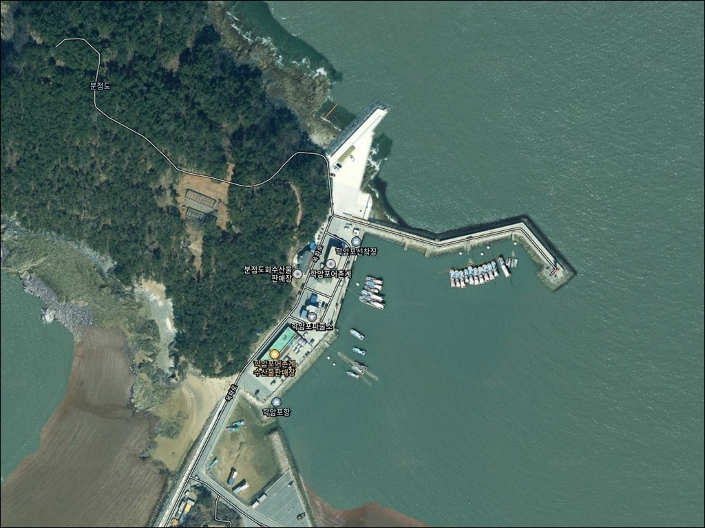
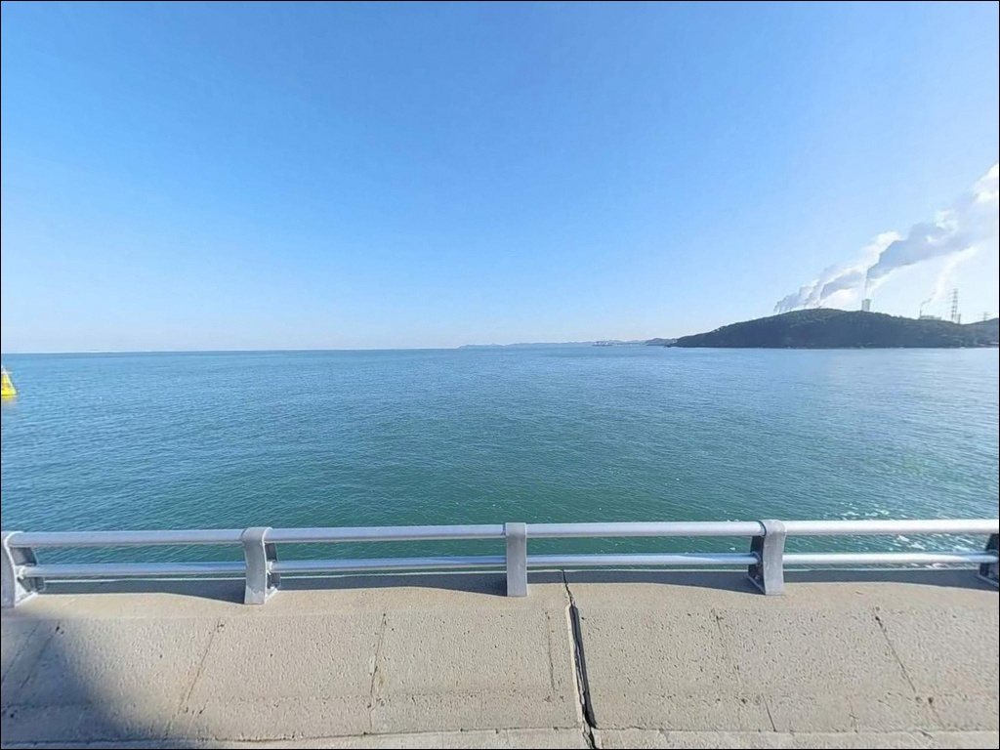
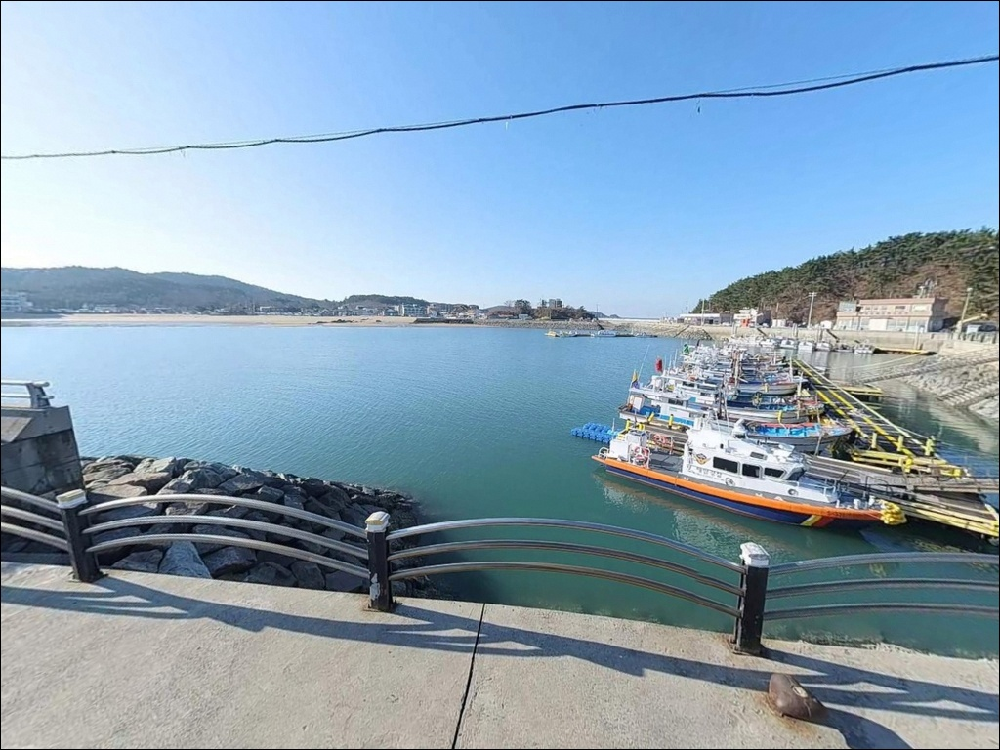
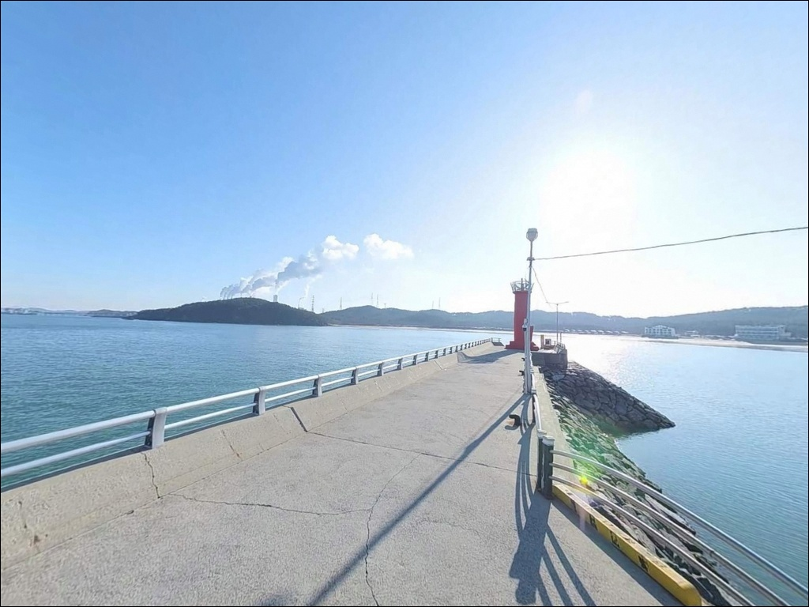
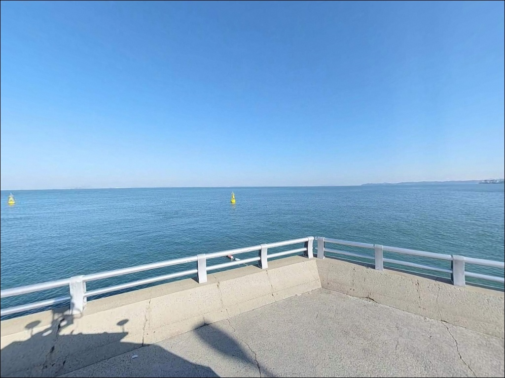
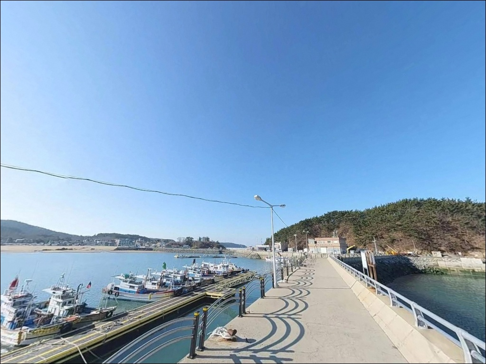
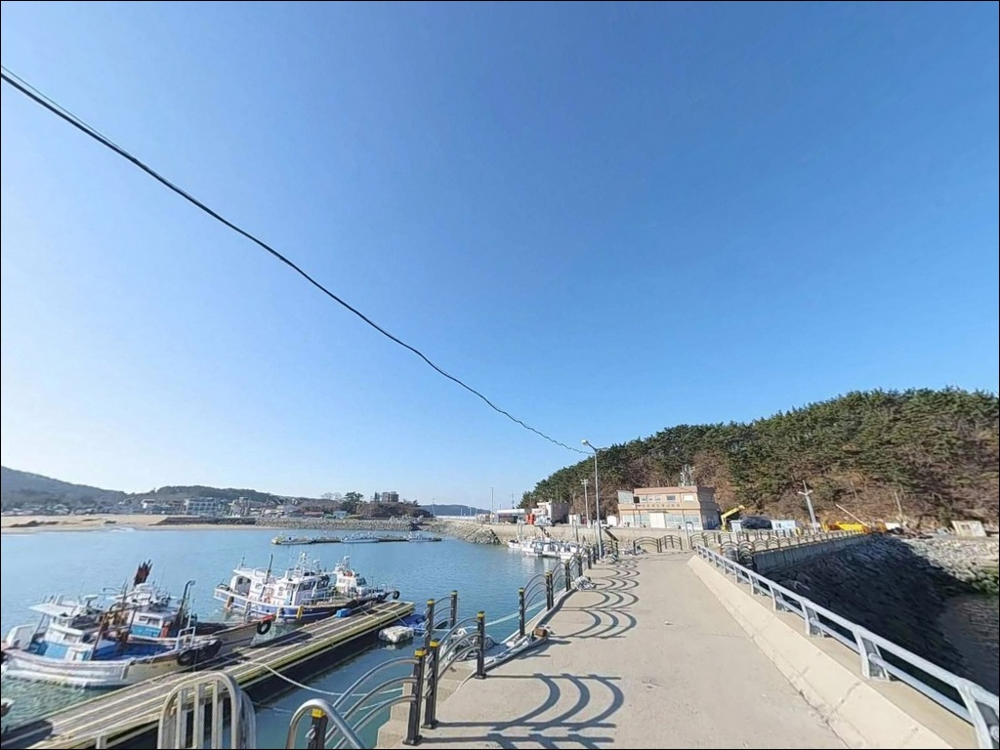
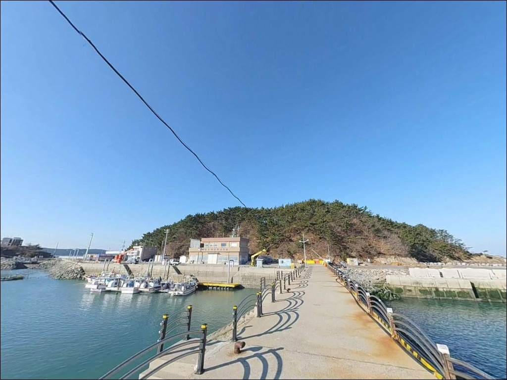
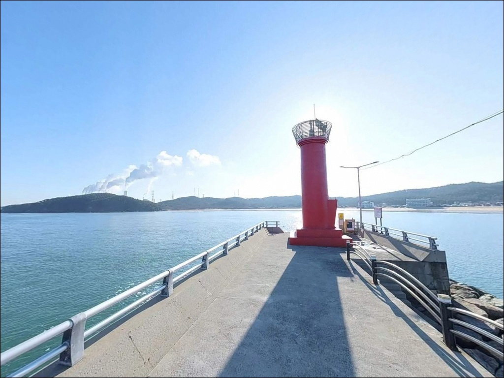

학암포항 (학암포선착장), 충남 태안군 바다와 가까운 차박, 낚시 명소
이 페이지에는 광고(제휴 링크 포함)가 있으며, 광고 링크를 통해 구매하면 운영자가 판매 수익 또는 수수료를 받을 수 있습니다. 포인트 사진: 카카오맵 스카이뷰·로드뷰. 이 페이지의 지도·사진 이미지는 카카오맵의 실제 서비스 이미지와 다를 수 있습니다.


포인트 안내
학암포항
충남 태안군 원북면 방갈리 515-241
물때를 확인하지 않고 학암포 갯바위 구간에 내려서면
간조 타이밍에 진입 경로가 막혀
고립 위험으로 이어지는 상황이 생깁니다.
방파제 낚시와 달리 갯바위 구간은
조수 높낮이에 따라 접근 가능 여부 자체가 달라지는 구조이기 때문입니다.
학암포항은 충남 태안군 원북면, 태안해안국립공원 구역 안에
자리한 지방어항입니다.
방파제와 선착장을 중심으로 하되,
해수욕장 좌우 갯바위 구간까지
복수의 낚시 자리를 선택할 수 있는 구조이며,
방파제 끝단 등대 주변이 핵심 자리로
주말에는 자리 경쟁이 발생하는 편입니다.
이 글은 학암포항의 진입 여건,
낚시 자리별 구조와 스타일 선택 기준,
그리고 차박 계획 시 반드시 확인해야 할
국립공원 규정에 집중합니다.
특정 어종 조황 단정이나 시설 허용 여부 확정은
이 글의 범위에 포함되지 않습니다.

1. 포인트 위치와 진입 동선 분석
학암포항은 태안반도 서쪽 해안선,
원북면 방갈리에 자리합니다.
항구까지 이어지는 도로는 왕복 2차선 포장도로로
급경사나 비포장 구간 없이 차량 진입이 가능한 편이며,
항 내부 부지가 넓어
대형 차량도 회차에 큰 어려움이 없는 수준입니다.
주차 후보지는 방파제 입구 공터,
내항 선착장 주변 아스팔트 부지,
학암포해수욕장 인근 공용 주차장까지
여러 곳에 분포합니다.
학암포해수욕장과 항이 맞붙어 있는 구조라
여름 성수기에는 이용객 차량이 몰려
주차 확보가 어려워지는 시간대가 생기는 편입니다.
비성수기 방문이라면 주차 부담은 크지 않습니다.
방파제 상부는 산책로로 소개될 만큼
보행 폭이 확보된 구조입니다.
외항 쪽 석축·테트라포트 구간은 야간에
발판 확인이 어려워지기 때문에,
진입 전 헤드랜턴을 먼저 갖추는 것이 기본 순서입니다.

2. 차박 환경 평가와 야간 체류 여건
학암포항 일대는 태안해안국립공원 구역 안에 포함됩니다.
국립공원 구역 내에서는 지정된 야영지 외
야영·취사·모닥불이 허용되지 않으므로,
항구 주변 공터에 차를 세우고
하룻밤 머무는 방식의 노지 차박은
이 구역에서 적용되지 않습니다.
인근에 태안해안국립공원 공단이 운영하는
학암포오토캠핑장이 있습니다.
해변까지 도보 5분 거리이며 인터넷 예약제로 운영됩니다.
민박과 펜션이 밀집된 관광지 구조라
완전히 조용한 차박 느낌은 아닌 편이며,
낚시와 캠핑을 함께 묶는 일정에 어울리는 곳입니다.
야간 분위기는 어항 시설 주변 가로등으로
기본적인 밝기가 확보되는 편입니다.
방파제 끝단으로 갈수록 조명이 약해지는 구간이 있어
개인 헤드랜턴은 반드시 챙겨야 합니다.


3. 주변 편의시설 및 인프라 현황
학암포항 주변은 태안 서해안 관광권에 속하는 지역으로
생활 인프라가 잘 갖춰진 편입니다.
항 인근 도보 이동 거리 안에
GS25, 이마트24, CU 편의점 세 곳이 있어
출조 전후 식음료와 기본 낚시 소품 조달은
어렵지 않습니다.
공중화장실은 학암포항·학암포해수욕장 일대에
복수로 확인됩니다.
방갈리 일대에는 횟집과 식당이 다수 운영 중이어서
낚시 후 현지에서 식사를 해결하는 동선을
짜기 좋은 편입니다.
의료 기관과 응급 대응 시설은
태안읍까지 이동해야 하는 거리입니다.
기본 상비약과 비상 물품은
출발 전에 챙기는 것이 기본입니다.

4. 출조 전 반드시 챙겨야 할 준비사항
학암포항 방문에서 가장 먼저 확인할 것은 물때입니다.
서해안은 조수간만 차가 크고,
간조 시 갯바위와 선착장 일부 구간의
접근이 불가능해지는 상황이 생깁니다.
바다타임에서 태안 원북면 기준 물때를 확인하고
만조 전후 2~3시간을 핵심 출조 타이밍으로
계획하는 것이 기본 전략입니다.
서해안은 기상 변화가 빠른 편이며,
북서풍이 강해지면 외항 방파제 끝단은
파도 영향을 직접 받는 자리가 됩니다.
당일 기상청 예보와 풍향은 출발 직전 다시 한번 확인하고,
조건이 나쁘면 내항 찌낚시 자리로 전환하거나
바람 그늘이 생기는 방파제 초입 구간을
대안 자리로 염두에 두는 것이 좋습니다.
석축과 테트라포트 구간에서는 밑걸림이 잦습니다.
채비 손실을 감안해 여분 채비를 넉넉하게 준비하고,
방파제 끝단은 주말 자리 경쟁이 있으므로
도착 시각도 미리 계획하는 편이 낫습니다.

5. 물때가 달라지면 자리 선택도 달라집니다
학암포항은 내항과 외항이 구분되는
전형적인 서해권 소형 어항 구조입니다.
내항 쪽은 수면이 잔잔해 찌낚시 자리로 어울리고,
방파제 중간에서 끝단으로 갈수록
외항 방향 수심이 확보되며
조류가 지나는 원투낚시 조건이 형성됩니다.
방파제 끝단 등대 주변이 핵심 자리로 꼽힙니다.
외항 쪽 수심이 상대적으로 깊어지는 구간이며,
석축과 테트라포트가 혼재한 구조상
채비를 멀리 보낼수록 밑걸림이 줄고
바닥 어종을 탐색하기에 유리한 조건이 됩니다.
해수욕장 좌우 갯바위 구간은
간조 타이밍에만 진입이 가능한 자리입니다.
들물이 시작된 상태에서 들어서면
고립으로 이어질 수 있으므로
물때 확인 없이 접근하는 것은 피해야 합니다.
진입 전 마진을 충분히 두고 들어서는 것이 안전한 방식입니다.
이 포인트에서 기대해 볼 수 있는 어종으로는
우럭, 노래미, 광어, 도다리, 붕장어 계열이 언급되는 편이며,
계절에 따라 고등어, 학꽁치 같은 회유어가
유입되는 시기도 있습니다.
최신 조황은 출발 전에 반드시 검색해 보시기 바랍니다.


6. 학암포항에 어울리는 낚시 스타일
이 포인트 방파제는 내항·외항 구분이 뚜렷해
낚시 방식별로 자리를 나눠 운용하기 좋은 구조입니다.
방파제 끝단 외항 방향은 수심이 확보되고
조류가 지나는 자리여서,
원투낚시 채비를 멀리 보낼수록 조과 조건이 올라가는 편입니다.
만조 전후 조류가 움직이는 타이밍에
봉돌 무게를 조류 세기에 맞춰 조절하면
채비 안정성이 높아집니다.
루어낚시는 석축과 테트라포트 경계 구간을 노리는 방식이 어울립니다.
구조물 주변에 우럭·노래미 계열이 붙어 있는 경우가 많아,
지그헤드 채비를 천천히 끌어오는 방식이 기본입니다.
갯바위 구간에서는 물때를 확인한 뒤
간조 전후 루어 탐색 타이밍으로 활용하는 방식도 가능합니다.
찌낚시는 내항이나 방파제 초입 잔잔한 수면 구간에서 시도하기 좋습니다.
바람 영향을 덜 받는 조건이 맞아 떨어질 때
감성돔 계열을 노릴 수 있는 자리가 됩니다.
서해 시즌 어종 중 갑오징어와 주꾸미는
에깅 채비로 방파제에서 노릴 수 있습니다.
가을 시즌에 활성도가 올라오는 경향이 있으며,
방파제 끝단 외항 방향이 탐색 자리로 적합합니다.

7. 대안 포인트와 플랜 B 동선
학암포항 방파제가 혼잡하거나 여건이 맞지 않을 때,
같은 해안선 위에서 이동 부담이 가장 적은 대안은
구례포방파제입니다.
학암포에서 서남쪽 방향 인접 해안에 위치하며,
에메랄드빛 물색으로 알려진 구역입니다.
어종 패턴이 학암포와 유사한 편이라
조건이 여의치 않을 때 첫 번째 이동지로 적합합니다.
조류 영향을 더 살린 낚시를 원한다면
이원방조제가 선택지입니다.
학암포에서 동쪽으로 차로 10~15분 거리에 있으며,
삼치와 루어 계열 낚시 후기가 있는 지역입니다.
방조제 구조 특성상 조류 흐름이 일정하게 유지되어
원투낚시와 루어낚시 모두 시도하기 좋은 구조입니다.
차박 용도로 대안을 찾는다면
학암포오토캠핑장 외에
학암포퍼스트캠핑장, 물결캠핑장 등
인근 민간 캠핑 시설을 활용하는 방법이 있습니다.
구례포해수욕장 주차장 일대는
여유 주차 공간을 확보하기 좋은 대안 후보로
상황에 따라 활용할 수 있습니다.

원투와 루어를 함께 챙길 수 있는
서해 방파제 낚시 거점입니다
방파제 구조가 뚜렷하고 원투낚시·루어낚시·에깅을
한 장소에서 운용할 수 있는 구조입니다.
주차와 진입이 편리하고 편의점과 화장실이
인근에 확인되어 있어
무거운 준비 없이 접근하기 좋은 편입니다.
다만 서해 조수간만 차와
국립공원 야영 규정은
방문 전 반드시 확인해야 하는 조건입니다.
물때를 무시한 갯바위 진입과
국립공원 구역 내 무허가 야영은
안전과 규정 두 가지 모두 문제가 됩니다.
가을 에깅 시즌에 갑오징어·주꾸미를 노리거나
방파제 끝단 원투낚시를 즐기는 낚시인이라면
이 포인트 구조와 잘 맞습니다.
출조를 마치고 학암포오토캠핑장을 예약해
하룻밤 머무는 일정으로 묶는다면,
낚시와 차박을 온전히 즐기는 태안 서해안 코스가 됩니다.